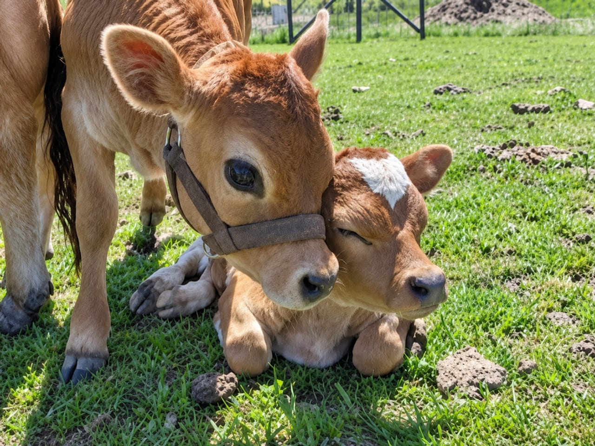
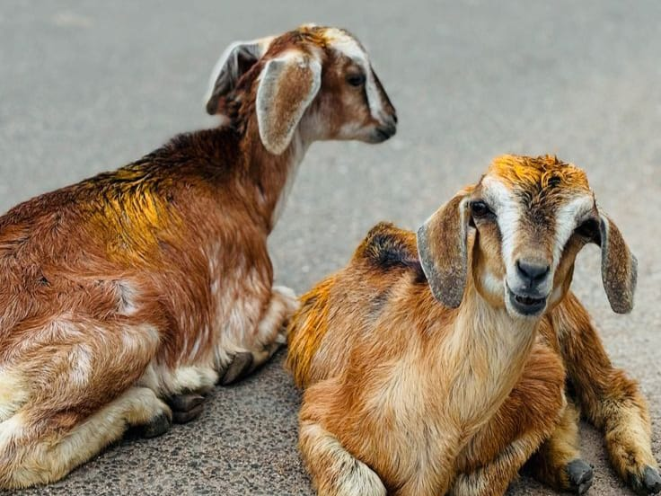
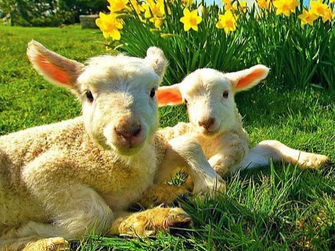
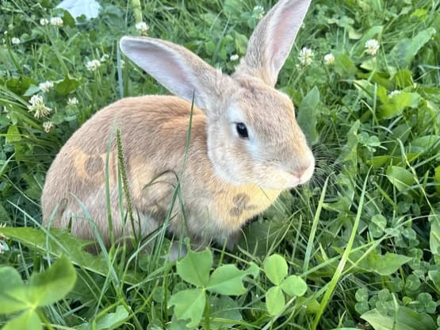
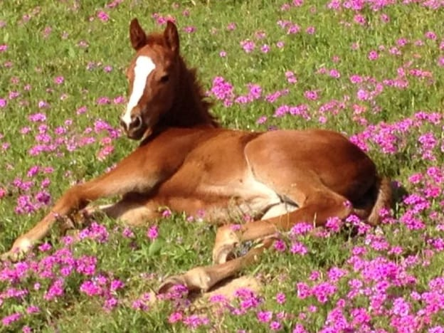

Discover amazing facts about our favourite animals!
← Back to CategoriesExplore interesting facts, habitats, food habits, behaviour, fun facts, size and lifespan of familiar pet and domestic animals.




